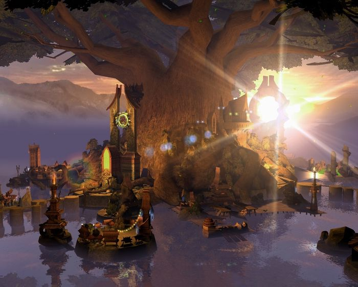

Miasto Sylvan
Motto: "Tańczymy w rytm otaczającej nas Natury"


Charakterystyka:
- Społeczeństwo: Elfy
- Przypisane kolory: zielony i brązowy
- Bóstwa: Sylanna – Smok Ziemi, Matka Natura
- Filozofia: Chyży jak wiatr, łaskawi jak potok, silni jak wodospad, mądrzy jak dąb... Zjednoczeni w Naturze. „Żyj i pozwól żyć... W harmonii”
- Królestwo: Irollan, Leśny Labirynt
- Stolica: Syris Thala, Nowa Zieleń
- Symbole: Pióro, Runa
Opis:
Elfy to wdzięczne i spokojne istoty żyjące w ścisłej symbiozie z Naturą. Czują obrzydzenie do wszelkich maszyn i miast, starają się trzymać starożytnych dróg i sprzymierzają się z innymi bardzo rzadko. Ich społeczeąstwo zbudowane jest wokół kilku najstarszych i najbardziej doświadczonych Elfów. Niespotykana zgodność z Naturą i z samymi sobą powoduje, że Elfy to bardzo zjednoczona frakcja.
(RSS - Rok Siódmego Smoka)
Starożytność
0 RRS Asha, Smok Ładu tworzy świat nadając mu kształt i cel. Daje początek Smokom Żywiołów, które tworzy po to, by strzegły i wypełniały jej wolę. Śmiertelne rasy mają być sługami Smoczych Bogów na ziemi. Każda rasa wybrała patrona i podarunek. Cicha i spokojna rasa Elfów wybrała Sylannę – Smoka Ziemi.
6 RRS:Wojny Starszych. Anioły prowadzą wojnę przeciwko Bezimiennemu. Chaos i zniszczenie ogarnia świat, Anioły są zdziesiątkowane... Wczesne cywilizacje Elfów i królestwa zostają zniszczone. Smoki Pierwotne zostają zapomniane, a tylko Smoki Żywiołów nadal są czczone.
Nowożytność
28-40 RSS: Wojny Ognia – Pierwszy Wielki Najazd Demonów
Podczas Wojen ognia niewiele było wiadomo o Elfach. Jednak to one jako pierwsze wyszły z propozycją przymierza przeciwko Demonom i wielu wielkich generałów było Elfami. To Elfy jako ostanie utrzymywały front odpierając ostatnią falę Demonów, podczas gdy Siódmy Smok przygotowywał swe ostateczne zaklęcie. Niewiele istot pamięta o szlachetnych zasługach Elfów...
50 – 260 RSS: Lata Uzdrowienia – utworzenie królestwa Irollan. Powolna odbudowa po Wojnach Ognia i względny pokój między rasami.
Ogromne połacie lasów spłonęły podczas marszu Demonów, ziemia była spalona a wiele źródeł wody zatrutych. Kiedy walki wreszcie ucichły, Elfy powróciły do swych spalonych ziem i podczas Lat Uzdrowienia, mozolnie odbudowywały swe domy, sadziły drzewa, oczyszczały wody i wypędzały ostatnie niedobitki Demonów. W końcu powstało silne i zjednoczone królestwo Irollan.
528 RSS: Bunt Tuidhany
Trzeci król Elfów Arniel decyduje, że społeczeąstwo Elfów jest zbyt zdecentralizowane, a wybory królów zbyt przypadkowe. Potrzebna jest monarchia dziedziczna, prawie wszystkie Elfy zgodziły sie z tym. Oprócz Tuidhany, władczyni sfery przygranicznej. W rezultacie Tuidhana i jej zwolennicy deklarują niepodległość od Królestwa Elfów.
540 RSS: Wojna Gorzkich Popiołów – Narodziny Mrocznych Elfów
Elfy z Irollanu i Rycerze z Imperium Sokoła są w stanie wojny z Tuidhaną, a ich polem bitwy staje się królestwo Tuidhany. Pierwsze zaatakowało Imperium Sokoła, Thuidana zwróciła się o pomoc do Arniela, jednak on odpowiedział atakiem, sprzymierzając się z Imperium. Widząc, że jej terytorium jest atakowane z dwóch stron, Tuidhana zawiera pakt z jednym z ocalałych Bezimiennych, by zyskać moc do ochrony swych ludzi. Ci którzy za nią podążyli zostali obdarzeni błogosławieąstwem Malassy – Smoka Ciemności. Od tego dnia, będą oni znani jak Mroczne Elfy. Zyskując nową siłę Mroczne Elfy wypędzają Elfów i Rycerzy ze swoich ziem. Niełatwy pokój zostaje zawarty pomiędzy Elfami a ich Mrocznymi braćmi...
566 RSS: Dzieą Ognistych Łez – Śmierć Tuidhany
Potworny ogieą trawi stolicę Elfów. Wysoki Król ginie wraz ze swą rodziną, przeżywa tylko jego syn Vaniel, ginie również Brythigga – Matka Drzew, poświęcona Elfom. Straty są niewyobrażalne. Mroczne Elfy zostają obwinione o to, co się stało. Mają do wyboru wygnanie lub śmierć w osłabionych wojną ziemiach. Większość uciekła, reszta została wytropiona i zabita przez Elfów. Tuidhana została na swej ziemi i ginie wraz z Mrocznymi Elfami, broniąc się do ostatniej kropli krwi. Miejsce, gdzie Brythigga umarła, zostało wymazane z map i żaden Elf nigdy więcej nie postawił tam stopy. Kolejna Matka Drzew zostaje wybrana, uchwalono, że nigdy żaden Elf nie zdradzi jej imienia obcym.
585 RSS: Odkrycie Spisku Demonów w Dniu Ognistych Łez
Smoczy Jeźdźcy przynoszą dowód, na to, że Dzieą Ognistych Łez został wywołany przez szpiega Demonów. Elfy rozumiejąc swój straszliwy błąd, wysyłają emisariuszy do Mrocznych Elfów oferując amnestię i powrót do ojczystych ziem Mrocznych Elfów. Oferta zostaje odrzucona.
756 RSS: Śmierć Vaniela
Vaniel umiera a jego miejsce zajmuje Alaron. Jest Elfem mniej konserwatywnym i zwraca się do innych ras, by odbudować dawne kontakty. Alaron wspomaga Czarodziejów ze Srebrnych Miast w ich walkach z Nekromantami, zachęca także kupców do częstych odwiedzin Irollanu.
951 RSS: Piąte Zaćmienie – Wojna Szarego Przymierza
Alaron wyprowadza armie Alfów z lasów i dołącza do Rycerzy Haven i Czarodziei ze Srebrnych Miast, by pomóc im w walce z Demonami. Hordy Demonów wreszcie ustępują, jednak za straszliwą cenę dla Szarego Przymierza.